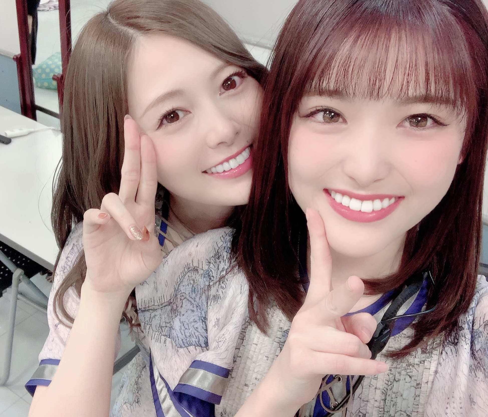
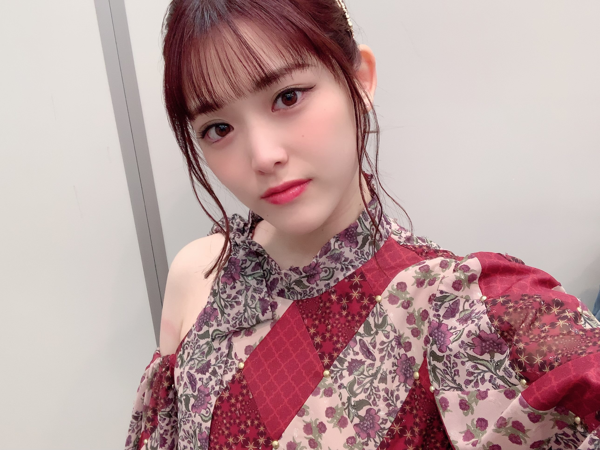

2019/1228Sat心にいすぎるのでもう皆さんに話してしまいたい話っ(o・・o)
松村沙友理です！
先日とてもショックな出来事が起こりました。
それは、、、
大好きだった
アニメ「星合の空」が、、、
とってもとっても続きが気になる形で
終わってしまったことですーーーー！！！！泣泣
がびーん
うえーん
あかーーん
私がなぜとてもショックを受けてるのか
説明しますと
※私は制作会社の人間でもアニメ業界の人間でもなく アニメが好きで観ているただの視聴者であり今回の件も松村沙友理がショック過ぎて調べた知識だけで述べているので 全てが真実かはわかりませんが、個人の見解というやつです。参考程度に。
10月クールの新作アニメとして
放送開始した作品なんですが
監督の赤根和樹さんのもと作られた
オリジナル作品
キャラクター原案のいつかさんも大好きだし
とてもウキウキしながら視聴開始したんです。
最初は普通の男子中学ソフトテニス部の
お話かと思いましてね
まぁまぁ観てみようと、軽い気持ちで
観てました。
そしたらすったもんだ
ただのソフトテニスの話じゃない！！！！
観ながら「嘘やろ！？」「やめて！！」と
思わず声が、、、。
毎話毎話 衝撃が与えられて
最初は観るのが辛い！ほどだったんですが
その衝撃からどんどん目が離せなくなり
この子も！この子も！その子もかー！！！が
11話まで続き
運命の第12話。
わぁ、頑張ったねー
うんうん。
あ、この子そやったなー
ああ、、、
あら、りょうまは何の話してるんやろ〜
え、
え、
辛さの限界MAX。
ちょっと待って、こっちも？
.......。
ぎゃーーーーー！！！！！！！！！！！！！
終わりました。
今までで一番のぎゃー！でした。
しかも！そのぎゃー！が
これからのアクションによって
この子の人生変わるで！！！レベルのぎゃー！なんですが
そのこれからのアクションっていう大事な所で
12話が終わったんですよ！！！！！！
今からやん！！今からが観たいよ！！
えーーー！！！？？？
そんなことある！？
これ、最終回じゃないよね、、、！？
せめて二期の放送決定して、、、
ないやんーーー！！！！！！
はい。
これが今回、私の身に起こった出来事です。
続き気になり過ぎるー。
一番気になるところー！！
あそこで終わったらダメー！！
と、いう事で
まだ話は終わってないですが
星合の空面白いので
みなさんぜひ観てください。
そして みんな同じ気持ちになればいい！！
本当は２クールある予定で制作されていたそうで
でも まだ決まってないみたいです。
悲しい。志城南中のみんなの人生が心配だよー。
お姉さんに安心させてよー。
気になって
年越す時も志城南中のみんなの事考えちゃう。
エイトビットのみなさん
面白い作品をありがとうございます
続編が制作されること心待ちにしております。
一視聴者として応援します！！
面白いアニメ作品がどんどん出てくる
この世の中に生きてること
幸せです。
心情をそのまま書きすぎて
引いてしまったみなさんすみません。
お詫びに可愛いまいちゃん載せときます。

これはMステ衣装です。

では。
2019/12/28 17:24


コメント(522)
今年も1年間おつかれさまです！^^*
第2期の発表あるといいねですね！(*^^*)
あとレコ大と紅白頑張ってください！！！！
8thバースデーライブ行くからねー！！
一緒に8回目の誕生日お祝いしようね！！
レコード大賞、紅白歌合戦頑張ってね！
昨日のポニテかわいすぎたからまたしてほしいなあ
アニメに無頓着な私はさゆりちゃんのリアクションかわいいなぁ…って眺めてました笑
最後のかわいい写真2枚のおかげで私もさゆりちゃんと同じ感情になりました…はぁ…会いたいなぁ…
でも元気そうでよかったです！
健康第一です！体調にはくれぐれも気をつけてね！
音楽番組たくさんあって今年も嬉しい年末です！
これからもよろしくお願いします
アニメ好きだからめっちゃわかるーー！！！
さゆまいは変わらない無敵感がある
年末も頑張って！！！
皆リアルタイムで同じ気持ち味わっています
TVアニメってたまにこーゆう爆弾仕込んではるからな・・・
早く2期始まるといいね！
かわいい！
まいやんとの写真ありがとー！
五瀬兄弟相手にめっちゃいい勝負でしたよね！
最後衝撃的でしたね！
今日の朝バースデーライブの当落発表みたら1日目と4日目当たりました〜❗️
初めてのバースデーライブなのでとても楽しみです
年が明けると高校最後のインターハイ予選が始まります
ちなみに僕はアルペンスキーって言う競技やってます
僕はまだ予選を突破してインターハイへ行ったことがないので今年こそは予選を突破してインターハイでも上位になれるように頑張ろうと思います！
なので応援してもらえたら嬉しいです
体に気をつけて頑張ってください
応援してます
よいお年を〜
ゆうまより
また、ブログ更新よろしく〜
受験終わったらアニメ見るよ！！
あと握手会も行くから名前覚えててねw
なんだかドギマギさせられる書き出しでしたが、
かわいいまいやんに免じて赦されました(´･ω･`)(さゆりんごもかわいいよ）
まじ
終わっちゃったの
がーん…
実家のテレビで録画してるから
毎回帰って見るの楽しみにしてたのに…
そう、
最初はなんとなく見てたんだけど、
なんかはまって見てたのに…
ちなみにまだ
皆でバーベキューしてるところまでしか見てない
はぁ
そうなんだ…
それは衝撃だ
教えてくれてありがとう
とりあえず実家帰ったら見る
まい
あ～ アニメのさがですね
途中でおわる
解るよ、二期出るならまだいいね
永遠に無しのアニメもあるので
確かにショック
大好き❤
さゆまいが大好きだよ
Mステめちゃめちゃ見れなかったんショックすぎる…
沙友理さんすごくかわいいよぉ〜
さゆりんのそういう話、めちゃくちゃ聞きたい、知りたいよ。アニメ全部見てるわけではないので、星合の空ちゃんと見なくちゃね。でもそういう気持ちになるのか、2期が決まったら見るか・・・。悩むなぁ・・・、はい、すぐ見ます（笑）
ほなね
さゆりんご先生がここまで仰るのですからきっと
二期制作決定も時間の問題でしょう。
わたる⊿
いつもいいけど今の髪色もめちゃめちゃ可愛い！
むしろ、こんな感じのブログ好きでやんす
私もそのアニメ見てた！！
今度握手会で語ろーねっ！
あとmステの衣装可愛すぎ！
紅白とレコ大頑張ってね〜
紅白欅と日向とのコラボらしいね！
頑張ってね！
私もまさに昨日から同じ気持ちです！
あの終わり方？え？私見落としてたけど2クール作品だよね？あれ？違う？えーーーーーーーーってなってます
辛すぎる…気になりすぎる…
二期期待しながら要望出しながら待ってます！！
ソフトテニスプレイヤーとしてめちゃ嬉しい
いつも元気貰ってるよー！！バスラも初日行くよー！！！
さいっこうだった～～～～～～！！！
二期やってほしい～～～～！！！
さゆまいかわいい～～～～！！！
以上です。
みてみるでざんす！
お詫びにまいやんを載せとけばいいという考え、、、笑
最高です笑
年末年始お仕事で大変だと思いますが、頑張ってください！！(っω<。)
まっちゅんとゴードギアスの話するために会いに行きます笑
星合の空観たことないや。。
まちゅがこんなに語っちゃうアニメ観るしかないじゃん！
dTVで配信されてるから、この休みで一気観するね(^^)
さゆまい可愛いすぎる(o^^o)
Mステのありがちな恋愛めちゃくちゃ良かった！
全ツの名古屋で聴けただけでも嬉しかったのに、
まさかのテレビで披露なんて感動した！
コメントする